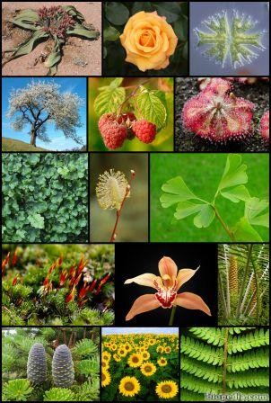
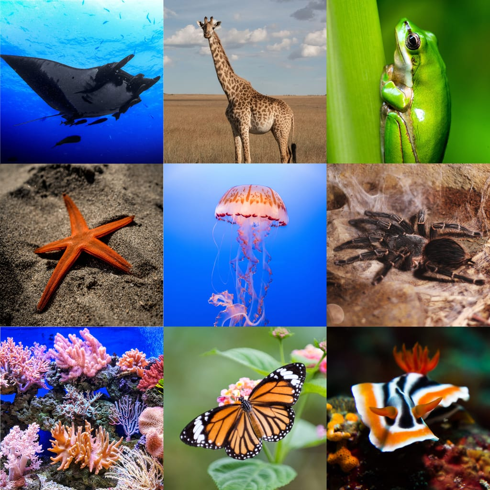
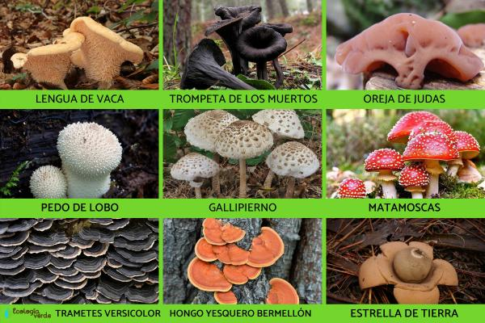
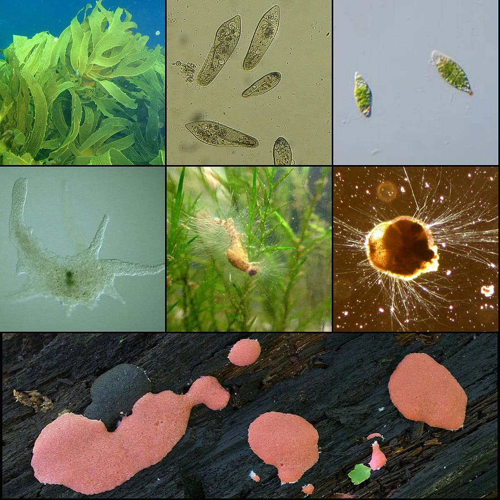

Reinos
vegetal
El reino vegetal, también conocido como plantae, es uno de los cinco reinos de los seres vivos. Este reino está compuesto por organismos multicelulares que son capaces de producir su propio alimento a través de la fotosíntesis. Las plantas son seres vivos autótrofos, lo que significa que pueden convertir la energía del sol, el dióxido de carbono y el agua en azúcares y oxígeno mediante la fotosíntesis.
Existen una gran variedad de plantas en el reino vegetal, desde pequeñas hierbas hasta árboles gigantes. Se clasifican en diferentes grupos y se dividen en diversas categorías como musgos, helechos, gimnospermas y angiospermas.
Las plantas cumplen un papel fundamental en nuestro planeta, ya que son responsables de la producción de oxígeno, la estabilización de los suelos, la protección de las fuentes de agua y la regulación del clima. Además, son la base de las cadenas alimentarias, ya que proporcionan alimento para los animales y otros microorganismos.
Algunas plantas también tienen propiedades medicinales y se utilizan en la industria farmacéutica para la fabricación de medicamentos. Además, son una fuente importante de materiales como la madera, el algodón y el papel.
El reino vegetal es extremadamente diverso y se encuentra en una variedad de entornos, desde los bosques tropicales hasta los desiertos áridos. Su adaptabilidad y habilidad para sobrevivir en diferentes condiciones los convierten en un grupo de seres vivos esenciales para el equilibrio de los ecosistemas y la vida en la Tierra.

Reino animal
El reino animal, también conocido como el reino Animalia, es uno de los principales reinos en los que los seres vivos se clasifican. Está compuesto por organismos multicelulares que se caracterizan por su capacidad de movimiento y por obtener su alimento de forma heterótrofa, es decir, consumiendo otros organismos o sus productos.
Los animales se encuentran en una amplia variedad de formas, tamaños y hábitats, desde microorganismos hasta grandes mamíferos. Se estima que existen más de un millón de especies animales distintas en todo el mundo, y cada una de ellas se ha adaptado de manera única a su entorno.
La diversidad del reino animal es asombrosa. Los animales pueden ser acuáticos, terrestres o aéreos. Algunos tienen esqueletos internos, como los vertebrados, mientras que otros tienen esqueletos externos, como los insectos. Se encuentran en todos los ecosistemas del planeta, desde los océanos más profundos hasta las regiones polares y los desiertos ardientes.
Los animales también exhiben una amplia gama de comportamientos, desde la migración en busca de alimento hasta la comunicación a través de señales visuales, auditivas o químicas. Algunos animales viven en grupos sociales estructurados, como las abejas y las hormigas, mientras que otros son solitarios.
La clasificación de los animales se basa en diversos criterios, como la presencia de columna vertebral (vertebrados e invertebrados), la estructura corporal, la forma de reproducción y su filogenia. Esto ha llevado a la subdivisión del reino animal en diferentes grupos, como mamíferos, aves, reptiles, anfibios, peces, insectos, arácnidos, moluscos y muchos más.
Además de su increíble diversidad, los animales también desempeñan un papel crucial en los ecosistemas. Actúan como polinizadores de plantas, ayudan en la dispersión de semillas, controlan las poblaciones de otros organismos y mantienen el equilibrio de los ciclos biogeoquímicos.
En resumen, el reino animal es un grupo diverso de organismos multicelulares que se caracterizan por su movilidad y heterotrofia. Su diversidad, comportamiento y función en los ecosistemas los convierten en una parte fundamental de la vida en la Tierra.

Reino fungi
El reino Fungi, también conocido como reino de los hongos, es uno de los cinco reinos de la clasificación biológica. Agrupa a un amplio grupo de organismos eucariotas que se caracterizan por su forma de obtención de nutrientes. A diferencia de las plantas, que son autótrofas y producen su propio alimento a través de la fotosíntesis, los hongos son heterótrofos y deben obtener su alimento absorbiéndolo desde su entorno.
Los hongos se encuentran en una amplia variedad de hábitats, desde el suelo hasta los cuerpos en descomposición de plantas y animales. Pueden ser unicelulares o pluricelulares, y su estructura celular es diferente a la de animales y plantas. Está compuesta por una pared celular rígida compuesta principalmente de quitina, un material que les brinda soporte y protección.
La reproducción en los hongos puede ser tanto sexual como asexual. En la reproducción sexual, se producen células especializadas llamadas gametos, que se fusionan para formar una nueva generación. En la reproducción asexual, los hongos pueden producir esporas mediante procesos como la gemación o la fragmentación.
Los hongos desempeñan un papel crucial en el equilibrio de los ecosistemas. Participan en la descomposición de materia orgánica muerta, liberando nutrientes al suelo y facilitando su reciclaje. Además, establecen simbiosis con otras especies, como las micorrizas, en las cuales forman asociaciones beneficiosas con las raíces de las plantas para ayudar en la absorción de nutrientes del suelo.
Algunos hongos son comestibles y se utilizan en la gastronomía, como los champiñones y las setas. Sin embargo, no todos los hongos son seguros para consumir, ya que algunos pueden ser tóxicos e incluso mortales. También existen hongos utilizados en la producción de medicamentos, como la penicilina, que ha sido fundamental en el tratamiento de infecciones bacterianas.
En resumen, el reino Fungi comprende un amplio grupo de organismos heterótrofos que desempeñan un papel esencial en la naturaleza. Su diversidad y funcionalidad hacen que sean organismos fascinantes y vitales para los ecosistemas en los que se encuentran.

Reino próstata
O reino da próstata refere-se a um conjunto de estruturas e funções relacionadas à glândula prostática no corpo humano. A próstata é uma glândula localizada abaixo da bexiga e ao redor da uretra masculina, e desempenha um papel importante no sistema reprodutivo masculino.
Dentro do reino da próstata, existem muitos aspectos a serem considerados. A hiperplasia prostática benigna (HPB) é um problema comum que afeta muitos homens à medida que envelhecem. Neste caso, a próstata aumenta de tamanho, podendo pressionar a uretra e causar problemas urinários.
Outra preocupação dentro do reino da próstata são os distúrbios inflamatórios, como a prostatite. Esta condição envolve a inflamação da próstata, geralmente causada por uma infecção bacteriana. A prostatite pode apresentar sintomas como dor no períneo, dificuldade urinária e desconforto durante a ejaculação.
Além disso, não se pode ignorar o câncer de próstata, que é uma das formas mais comuns de câncer em homens. O câncer de próstata se desenvolve quando as células da glândula prostática começam a crescer de forma anormal e descontrolada. É fundamental realizar exames regulares, como o exame de toque retal e o exame de sangue do antígeno prostático específico (PSA), para identificar precocemente possíveis sinais de câncer de próstata.
Por fim, é importante mencionar que o reino da próstata é alvo de pesquisas constantes na área médica. Novas técnicas de diagnóstico e tratamento estão sendo desenvolvidas para melhorar a detecção precoce e o manejo das condições relacionadas à próstata, a fim de garantir uma melhor qualidade de vida para os homens afetados por essas condições.

REGRESAR